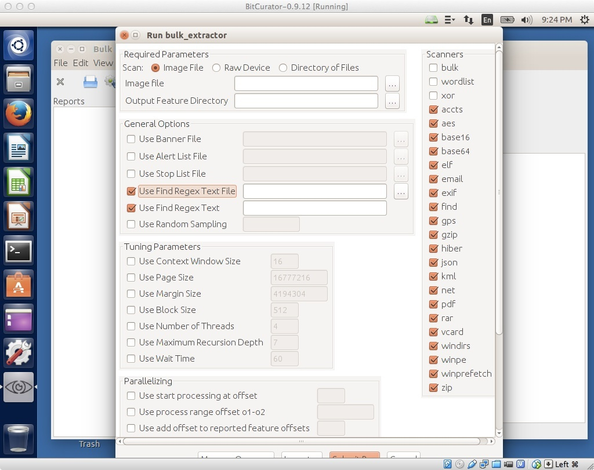
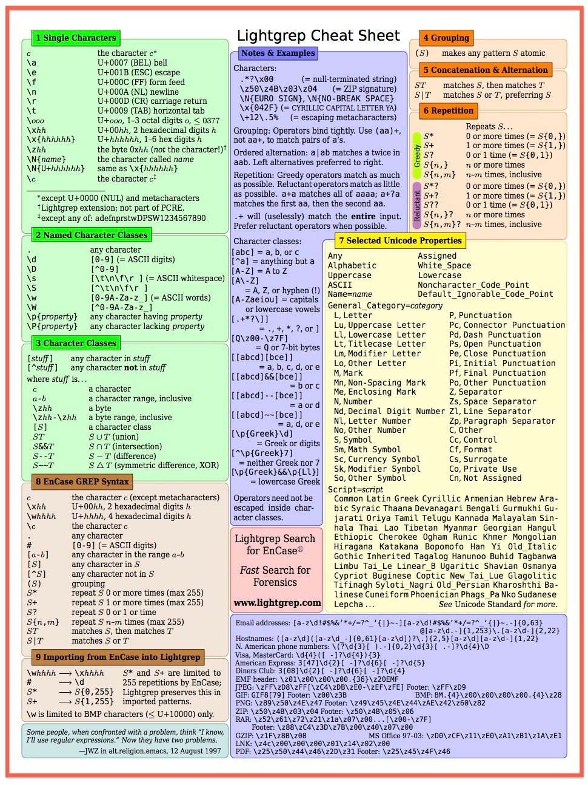

Regular Expressions in Bulk Extractor
Matching patterns with regular expressions in bulk_extractor
The bulk_extractor tool includes the option to find items that match a particular regular expression. (There are many good introductions to working with regular expressions online. If you're not sure where to start, try here).

Figure 1: Enabling the find (by regex's in file) and find (by a single regex string) in BEViewer.
When using the bulk_extractor GUI, BEViewer, there are two options for providing bulk_extractor regular expressions with which to scan a disk image. Selecting Use Find Regex Text File will prompt bulk_extractor to read in regular expressions (one per line in the file) and generate the appropriate output in the report file find.txt. Selecting Use Find Regex Text allows the user to enter a single regular expression to be analyzed in the current run (in the text box within the GUI). Selection of both of these options can be seen in Figure 1.
Creating new regular expressions within a regex text file
If you with to create your own regular expressions, please follow the guidelines in the Bulk Extractor Users Manual. A description of regular expression handling begins on Page 29.
Performance considerations
As noted in the bulk_extractor users manual, regular expression searches using the default find code can considerably lengthen the time required to process an image. The bulk_extractor tool is capable of using lightgrep, which provides better performance when executing such searches as long as the lightgrep software is installed.
Lightgrep is installed in BitCurator by default in BitCurator 1.6.2 and later. The chart in Figure 2 provides guidance on searches with lightgrep.

Figure 2: Lightgrep cheat sheet.
If you would like to provide feedback for this page, please follow this link to the BitCurator Wiki Google Form for the BitCurator All Step-by-Step Guides section.